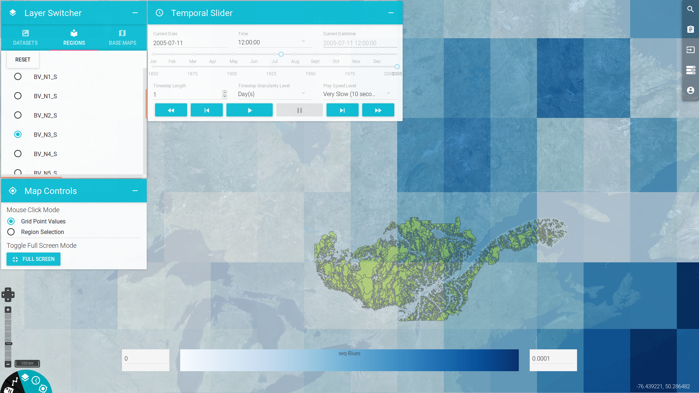

Frontend¶
Justification¶
The PAVICS-frontend (GitHub Repository) is the main interface for users to perform analyses such as:
- Creation of standard and custom climate change scenarios for impact and adaptation studies,
- Spatial and temporal exploration of climate data sets,
- Analysis and validation of climate model simulations, and
- Visualization of climate change scenarios at the watershed scale.
These tasks conventionally require downloading terabytes of data and heavy data processing that convert raw data into useful products: statistics, graphics, time series, or maps. PAVICS-frontend turns these time-consuming tasks into a streamlined click, drag and drop exercise. Over 20 collaborators have pledged their support to this vision of an hardware and software interface that gives both experienced researchers and non-specialists access to a highly advanced and powerful toolset.
Example¶
For an example of a climate analysis process using the PAVICS-frontend, see this short hands-on video.
Elements¶
Panels¶
Panels provide methods for interacting with any preconfigured or calculated data sets within the PAVICS-SDI. The bottom-left corner of PAVICS-frontend toggles visibility for five different panels:
- Clicked Point Information,
- A Time Series Chart,
- A Data Layer Visibility Switcher,
- A Temporal Slider, and
- Other Map Controls
Each panel element can be used to view/inspect different types and display additional information of the active data.
Data and Process Manager¶
À faire
Write frontend docs.